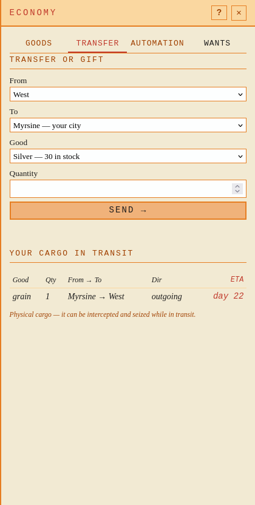
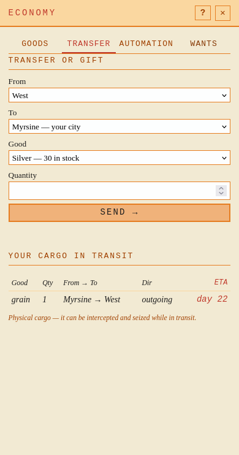

Kontrakt och bevis · Verklig CLI före/efter · Provenance · Fyra mutationer
Före
Error: resolve destination "West": no own or contacted city named "West" See keryx transfer --help
Efter
Error: resolve destination "West": sending city "West" is also the destination — choose another source with --from <city> (see keryx settlements) See keryx transfer --help
Med --from Myrsine lyckades överföringen. Vald stad förblev West.


Andra helt nya världen: provenance · CLI.